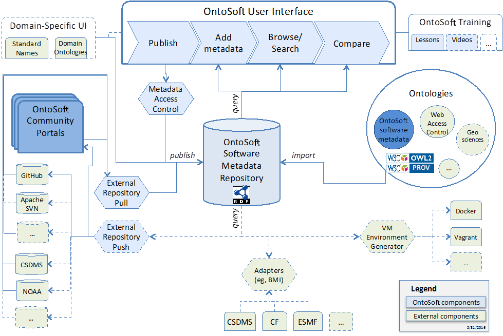

An overview of OntoSoft can be seen in the figure below:

OntoSoft is a metadata registry that describes software from different communities in a distributed manner. The metadata captured by OntoSoft falls into six major categories based on information that a scientist would seek about the software: 1) identify software, 2) understand and assess software, 3) execute software, 4) get support for the software, 5) do research with the software, and 6) update the software. The metadata properties themselves can be either “recommended” or “optional”. The rationale for this organization is to allow users who contribute software to understand why the metadata is requested, and to allow the users that are looking to reuse the software where to find metadata that is relevant to them. This organization is captured in the OntoSoft ontology, which provides the backbone for structuring the OntoSoft user interface.
As shown in the top of the figure, the interface allows publishing software, adding metadata about software, searching software across different OntoSoft portals, and comparing different software. This is possible because each OntoSoft portal has a public API that can be used to retrieve a list of all software entries and all the metadata for a particular software entry. The results can be returned in different serializations (e.g., JSON, RDF/XML).
Each OntoSoft portal shows its own software entries by default. Each portal can be configured to index the software entries from other portals, aggregating all their data so it can be efficiently queried. This allows users to view, filter, and compare entries from other portals. When a user is logged into a site and selects a software entry from another portal, the user is redirected to the page of that software entry in the portal in which the entry was created. With this approach, the information is decentralized and each community is responsible for their own software entries while enabling others to see those entries from their own portal.
OntoSoft allows users to specify who can edit metadata for their software entries. This is done through an access control ontology. For a software entry they published, users can specify who can edit its metadata or whether others can edit specific metadata properties.
There are currently several OntoSoft portals deployed to describe software in different communities like Earth systems modeling, paleoclimatology, geospace sciences and environmental omics. Additional sites are being set up for other communities, as well as for institutions that want to track the software produced by their members. There are currently more than 600 software entries described in OntoSoft.